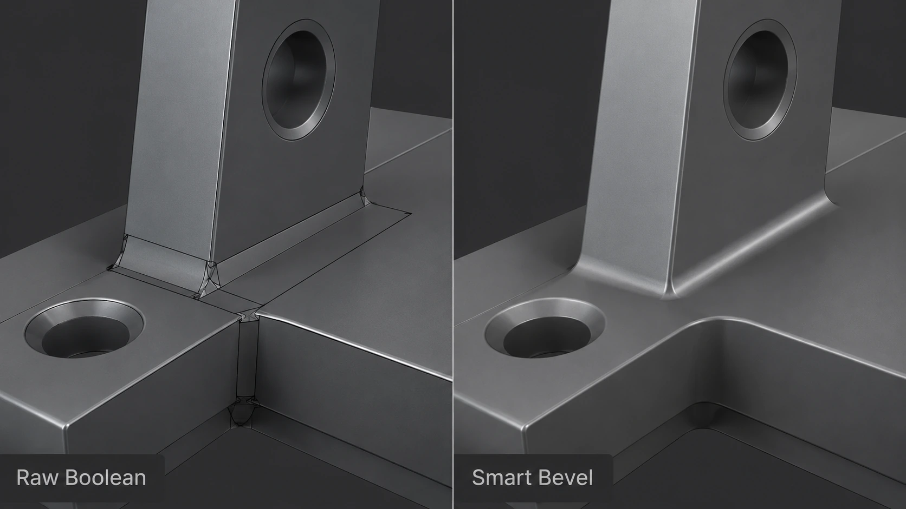
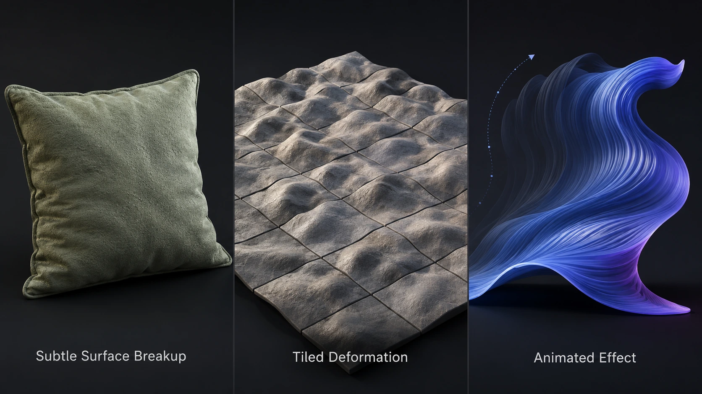

Every new software release arrives with a long feature list, several polished demonstration videos and at least one tool that looks incredible until you try using it on a real production model.
The important question is not whether 3ds Max 2027 has new features.
It does.
The better question is whether those features will save time during actual modeling, texturing, rendering and scene-management work.
As someone who spends a large part of the day working in 3D, I am usually less interested in flashy additions than I am in tools that remove repetitive cleanup. A feature does not need to reinvent the industry to be valuable. Sometimes it only needs to eliminate ten annoying minutes from a task you perform several times a week.
After going through Autodesk’s official 3ds Max 2027 documentation, these are the additions and changes that seem most useful to working artists.
Smart Bevel is the feature that immediately stands out
Smart Bevel is probably the most important modeling addition in 3ds Max 2027.
It is designed primarily for beveling intersections created through Boolean operations. Instead of depending entirely on clean edge loops, Smart Bevel follows the surface outward from the selected intersection and generates an adjustable transition between the surrounding areas.
That is a big deal for hard-surface modeling.
Boolean workflows are fast, but the cleanup afterward can become the part that eats your afternoon. A cut might look perfectly fine from one angle while producing pinching, overlapping bevels or unpleasant shading somewhere else.
Smart Bevel includes limiting behavior intended to prevent bevels from intersecting, collapsing or creating unusable topology. It also includes controls for width, segments, depth and profile.
Because it is applied as a modifier, the workflow remains non-destructive. You can continue adjusting the Boolean operation underneath it instead of immediately collapsing the stack and committing to the result.
For product visualization, furniture hardware, machinery, architectural components and general hard-surface work, this could become a genuinely useful part of the modifier stack.

The presets could make Smart Bevel faster to use
Smart Bevel includes presets for several common modeling situations.
These include rounded Boolean edges, small hard-edge bevels, support edges for subdivision and larger industrial-style transitions.
Presets are not the most exciting feature to advertise, but they matter in production. A tool becomes much more useful when you can reach a predictable starting point without rebuilding the same settings every time.
I would still expect to adjust the width and profile for each model. A furniture leg, a molded plastic component and a machined metal bracket should not receive the same edge treatment.
The useful part is getting close quickly.
The built-in presets also make it easier to understand what the modifier is designed to do. Instead of opening a new tool and staring at twenty settings, you can begin with a preset that matches the modeling intent and work backward from there.
Boolean cleanup received some attention too
Smart Bevel is not the only improvement aimed at Boolean modeling.
Autodesk says that the Boolean modifier now has improved recursive welding for newly created Booleans in 3ds Max 2027. The goal is to reduce internal faces and remove unnecessary edges and vertices.
That should mean cleaner results before Smart Bevel is even applied.
I would not expect this to magically turn every chaotic Boolean stack into perfect subdivision topology. That would be asking software to perform dark wizardry, and software tends to charge extra for dark wizardry.
But fewer internal faces and redundant edges should reduce manual cleanup and make the resulting geometry easier to manage.
The combination is what makes this interesting.
The Boolean modifier creates the intersection more cleanly, and Smart Bevel handles the transition around it. That sounds like a much more complete workflow than adding one new modeling tool in isolation.
Extrude is no longer trapped on local Z
The Extrude modifier now supports custom orientation and direction when extruding splines.
Previously, spline extrusion through the modifier was tied to the object’s local Z direction. That works fine for basic text, walls and profile shapes, but it becomes restrictive when the extrusion needs to follow a different direction.
The custom-direction controls should make spline-based modeling more flexible without forcing artists into extra object rotations, helper setups or conversions.
This is not the kind of feature that will dominate a release trailer.
It is the kind of feature that makes you wonder why it was not already there.
For architectural details, furniture profiles, trim pieces, signage, layered panels and other spline-driven objects, this should remove a few unnecessary steps.
Those small workflow improvements add up quickly when you are building an entire room full of assets.
Spline Chamfer gets a practical fixed-radius option
The Spline Chamfer modifier now includes a fixed-radius option designed to create consistent circular corners.
This is another small change that could be surprisingly useful.
When creating rounded corners on a spline, maintaining a true and consistent radius is often more important than simply making the corner appear smooth. That is especially true when modeling manufactured products, cabinetry, routed panels, tabletops and architectural profiles.
A fixed radius makes the result easier to control and more closely connected to real-world dimensions.
That matters when the model is based on drawings or manufacturing specifications instead of being shaped entirely by eye.
A corner radius of 12 millimeters should remain a 12-millimeter radius. It should not quietly become “roughly roundish because the control points felt moody today.”
Noise Plus looks useful beyond making lumpy rocks
3ds Max 2027 introduces a new Noise Plus modifier with additional fractal types, animation controls and tiling options.
Noise modifiers are often demonstrated by turning a sphere into a rock, which is the 3D equivalent of demonstrating a new camera by photographing a brick wall.
The more interesting uses are subtle.
Noise can help break up surfaces that feel mathematically perfect. It can add slight variation to upholstered objects, terrain, organic forms, worn materials, sculpted pieces and abstract motion graphics.
Tiling controls should also make the modifier easier to use when the result needs to repeat predictably.
Animation support opens the door to moving surfaces, stylized effects and procedural deformation without relying entirely on hand-keyed animation.
The key is restraint.
A tiny amount of controlled variation can make an asset feel more natural. Too much Noise Plus, and your carefully modeled chair begins looking like it was recovered from the bottom of the ocean.

The smaller performance improvements may matter more over time
Several of the less glamorous changes in 3ds Max 2027 focus on performance.
Autodesk lists faster Attribute Transfer operations, improved Retopology processing, faster Shape Map calculations and better soft-selection performance when Volume Select is used on polygon objects.
Shell Material evaluation has also been adjusted to avoid unnecessary reevaluation when the active viewport material has not changed.
Procedural maps should convert to bitmaps more quickly, including when bitmap images are resized inside 3ds Max.
None of these changes will completely transform a project on their own.
They could, however, make heavy scenes feel less stubborn.
Performance improvements are difficult to judge from a list because the real benefit depends on the scene. A character artist transferring attributes between dense meshes will care about different improvements than a furniture artist working with dozens of materials and high-resolution textures.
Still, I am always happy to see development time spent on reducing waiting and unnecessary calculations.
A progress bar is not a creative tool.
Color sampling now separates scene color from display color
The Color Selector can now sample either the displayed color or the underlying scene-space color in supported windows, including the viewport and Rendered Frame Window.
That distinction matters in a color-managed workflow.
The color shown on the monitor may have already passed through a view transform. Sampling that displayed result is not always the same as sampling the original scene value used by the renderer.
Being able to choose between the two should make color picking more predictable.
3ds Max 2027 also moves to OpenColorIO 2.5.1.
For artists working across multiple applications, renderers and compositing tools, consistent color management is no longer optional. It is part of keeping an image from changing personality every time it crosses into another program.
This update will not make color management magically simple, but clearer control over what the eyedropper is sampling is a welcome improvement.
The new Field Helper could be useful for procedural selections
The new Field Helper creates a three-dimensional volume that can drive component selection through tools such as Volume Select.
That means the selection can be controlled using a visible object in the scene rather than relying only on a basic primitive or manually painted selection.
Fields can be combined and shaped to create more complex areas of influence.
This could be useful for procedural modeling, deformation, scattering, localized effects and animation. Instead of permanently selecting a group of vertices, the selection can respond to a movable volume inside the scene.
For a still-image artist, that may be helpful when creating controlled variation across an object or environment.
For motion work, the helper could be animated so the affected area travels across the geometry.
It is one of those tools that may not have an obvious daily use at first, but it gives technical artists more building blocks for creating reusable systems.
Autodesk Assistant is useful, but it is still a tech preview
3ds Max 2027 includes Autodesk Assistant as a technology preview.
The Assistant lets users ask natural-language questions about 3ds Max features and workflows. Autodesk says its answers reference the official product documentation.
That could be helpful when you know what you want to accomplish but cannot remember which menu Autodesk hid the command inside this year.
Because it is a tech preview, I would treat it as a documentation shortcut rather than an authority that should make production decisions for you.
It may help explain how to add a camera, create a three-point lighting setup, apply a material or export a USD file.
It should not replace understanding the scene or checking important settings yourself.
Still, software documentation is only valuable when people can find the relevant page. A built-in assistant that points artists toward the correct information could be genuinely convenient.
DirectX 9 support is gone
3ds Max 2027 removes support for DirectX 9.
For most artists using current hardware and drivers, that should not change much.
It may matter for older viewport workflows, aging machines or plugins that have not been updated in a long time.
This is one reason I never recommend upgrading production software in the middle of an important deadline.
The major features are rarely the dangerous part.
The danger usually comes from an old plugin, script, driver or custom tool that quietly depended on something the new version no longer supports.
Should you upgrade immediately?
The feature list is promising, especially for hard-surface and spline-based modeling.
Smart Bevel alone may be enough reason for some artists to begin testing 3ds Max 2027. The Boolean improvements, custom spline extrusion and fixed-radius chamfers also fit nicely into practical modeling workflows.
That does not mean everyone should migrate an active project immediately.
My usual approach is boring, which is exactly why it works:
1. Install the new version beside the existing production version. 2. Confirm that the renderer and essential plugins support it. 3. Copy or rebuild custom scripts carefully instead of dumping everything into the new installation at once. 4. Open copies of several real production scenes. 5. Test materials, render settings, asset paths, proxies and output files. 6. Keep the previous version installed until the new one has survived actual project work.
A software release does not become stable merely because the installation finished without smoke coming out of the computer.
The best time to test a new version is between projects or during a quieter production period.
My practical takeaway
3ds Max 2027 does not appear to be a complete reinvention of the application.
Honestly, that is probably a good thing.
Working artists do not always need the interface rearranged or an entirely new philosophy dropped onto software they use every day. We need reliable improvements to the tools already carrying most of the workload.
Smart Bevel addresses a real weakness in Boolean modeling. Custom extrusion direction and fixed-radius spline chamfers improve common modeling tasks. Noise Plus adds more procedural control, while the performance and color-management updates strengthen the less visible parts of production.
This looks like a release built around improving existing workflows rather than replacing them.
The feature I would test first is Smart Bevel.
The feature I might quietly appreciate every day is probably the custom-direction Extrude modifier.
That is often how software upgrades work. The headline feature gets you to install the release, but the tiny quality-of-life improvement is the thing you eventually refuse to live without.
More 3D workflow articles and production tips are available on the [JasonArts blog](https://www.jasonarts.com/blog).
Sources
Autodesk — What’s New in 3ds Max 2027: https://help.autodesk.com/view/3DSMAX/2027/ENU/?guid=GUID-7CC2F041-F797-4DB9-B2F9-326AAB994F37
Autodesk — Smart Bevel documentation: https://help.autodesk.com/view/3DSMAX/2027/ENU/?guid=GUID-1C7D01F2-370D-4F8D-905B-6FBCAC1CE38E
Autodesk Media & Entertainment — What’s New in Maya and 3ds Max: https://blogs.autodesk.com/media-and-entertainment/2026/03/25/whats-new-in-maya-and-3ds-max/